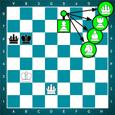
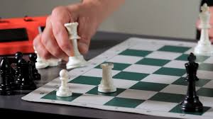
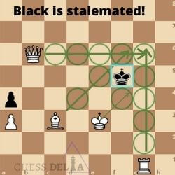
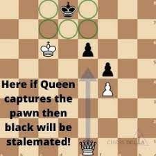
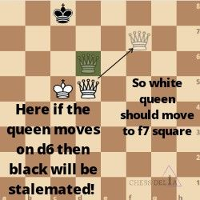
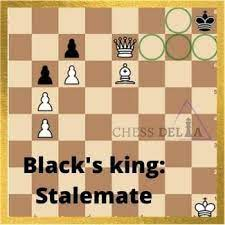

Introduction to Special Moves
Aside from typical moves, chess has a few unique rules that make the game even more strategic and complex. Understanding these special moves can greatly improve your gameplay and add depth to your strategy.
1. En Passant
En passant is a special pawn capture that can occur when a pawn moves two squares forward from its starting position, landing beside an opponent’s pawn. The opponent can then capture it "in passing" as if the pawn had only moved one square.
This move can only be made immediately after the opposing pawn's two-square move and cannot be used later.

2. Pawn Promotion
Pawn promotion occurs when a pawn reaches the opposite side of the board. At this point, the player must promote the pawn into a more powerful piece: usually a queen, but it can also become a rook, bishop, or knight. This decision can change the game’s dynamic significantly, especially in the endgame.
The choice of promotion depends on the situation, but most players opt to promote to a queen, the most powerful piece.
 3. Stalemate
Stalemate is a situation where a player has no legal moves and their king is not in check. When stalemate occurs, the game is considered a draw, regardless of the material advantage one player may have.
Players should be cautious to avoid stalemate when they have a significant advantage, as it can turn a winning game into a draw.
   Why These Moves Matter
Understanding these special moves not only allows players to use them strategically but also helps prevent falling into traps or missing opportunities during a game. Mastering them can be a game-changer in competitive play.